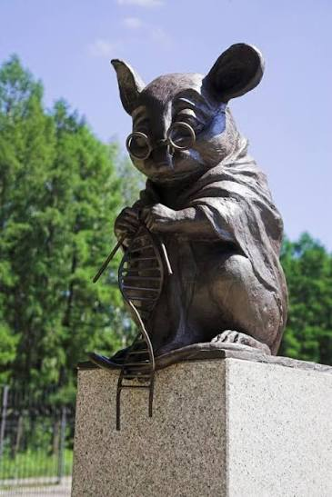
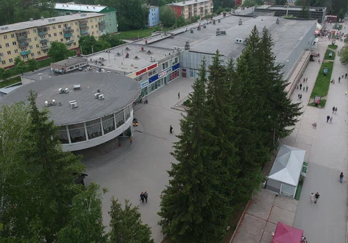

Главная улица Верхней зоны Академгородка, соединяющая жилые кварталы с научными институтами — здесь же стоит один из самых узнаваемых памятников района.
Порядок, в котором вы пойдёте по этим точкам, зависит от вашего маршрута — его называют организаторы. Здесь точки перечислены просто для справки.
На Морском проспекте, 25 находится государственное бюджетное учреждение здравоохранения «Консультативно-диагностическая поликлиника №2», обслуживающая жителей Верхней зоны Академгородка.
«Золотая роща» — сеть продуктовых супермаркетов с несколькими точками по всему Академгородку, одна из которых работает на Морском проспекте.

Один из самых известных памятников Академгородка. Первый камень в его основание заложили 1 июня 2013 года — в честь 55-летия Института цитологии и генетики СО РАН, а открыли памятник 1 июля 2013 года, приурочив к 120-летию Новосибирска. Над образом мыши работал новосибирский художник Андрей Харкевич, перебравший больше десяти эскизов; выбрали мышку, вяжущую на спицах двойную спираль ДНК — как символ благодарности человечества подопытным мышам, благодаря которым было сделано немало генетических открытий. Бронзовая скульптура высотой почти метр стоит на гранитном постаменте между проспектами Академика Лаврентьева и Академика Коптюга, рядом с ИЦиГ СО РАН.
Парк назван в честь Михаила Алексеевича Лаврентьева — советского физика и математика, основателя и первого председателя Сибирского отделения АН СССР, руководившего им с 1957 по 1975 год. Парк — часть исходного замысла Академгородка, где лес должен был становиться продолжением лабораторий и аудиторий, а учёные и студенты — идти на работу через лес.
«Ярче!» — сеть продуктовых супермаркетов, одна из крупных розничных сетей Новосибирска и области, с несколькими сотнями магазинов в городе.
«Мария-Ра» — одна из крупнейших розничных сетей Сибири, основанная в Барнауле в 1993 году; сегодня объединяет сотни продуктовых магазинов в регионе, включая точку на Морском проспекте.

Круглое здание торгового комплекса — один из узнаваемых силуэтов Морского проспекта. Комплекс был спроектирован московским Институтом экспериментального проектирования Академии строительства и архитектуры СССР и с момента постройки остаётся центральным торговым объектом Верхней зоны Академгородка.
Небольшая торговая точка на Морском проспекте — одна из остановок маршрута квеста.
Реальные координаты и порядок точек для вашего личного маршрута присылает бот — эта страница только для знакомства с местами заранее.